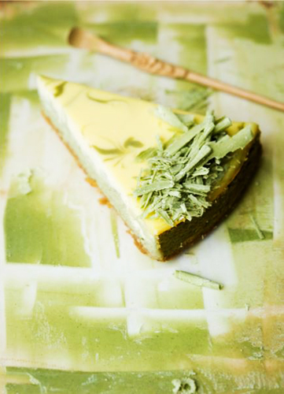

Toorjuustukook matchaga

Põhi
| Koostisosad |
Kogus |
| Digestive küpsis |
6 tk |
| või |
30 g |
Täidis
| Koostisosad |
Kogus |
| toorjuust |
600 g |
| 35% koor |
1,5 dl |
| muna |
2 tk |
| munakollane |
2 tk |
| suhkur |
1 dl |
| matcha pulber |
3+1 tl |
| valge šokolaad |
100 g |
- Purusta küpsised ja sega sulatatud võiga. Suru lusikapõhjaga tugevalt 24 cm-se koogivormi põhja.
- Sega toorjuust koore ja suhkruga ühtlaseks massiks. Lisa ühekaupa munad ja munakollased, massi vahepeal segades.
- Jaga saadud tainas pooleks ja lisa ühele osale tainast 3 tl matcha pulbrit, sega. Kalla roheline mass küpsisepõhjale ja jäta u. 1 tl alles.
- Rohelise massi peale aseta lusikaga valge tainamass nii, et see katab üleni rohelise.
- Nüüd nirista teelusikaga rohelisest tainast koogile peened triibud, võta puidust grillivarras ja “joonista” sellega koogile asetatud triipudest muster.
- Küpseta 160-kraadises ahjus 1 tund. Lülita ahi välja ja lase koogil veel tunnike pilukil uksega ahjus seista. Edasi jahuta kooki toatemperatuurini ja siis üleöö külmikus.
- Kaunistuseks sulata veevanni kohal valge šokolaad ja sega see 1 tl matcha pulbriga. Jaota mass õhukese kihina siledale alusele, spaatli või noaseljaga siludes.
- Tõsta külmkappi ja lase taheneda (u. 15 min). Tõmba juustunoaga šokolaadikihist laastud ja kaunista nendega kook.
Allikas